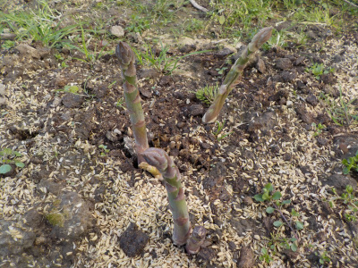
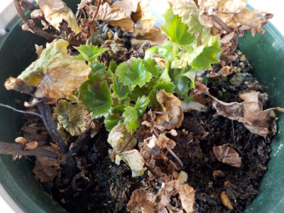

遊びで植物を育てよう
2019/03/24
アスパラが出てきました。
今までも少し出てたんですが、それが伸びだしました。

もう食べれるサイズです。
なんかもったいないので、最初のうちは育てようかな。
【3月TOP】
【日記TOP】
【園芸TOP】
2019/03/09
去年買った花が冬を越しました。
加温なしでは冬は越せないかと思ったんですが、屋内で冬越しできました。

なんて名前だったかなー。
忘れました。
調べて管理方法をチェックして育てなきゃ。
【3月TOP】
【日記TOP】
【園芸TOP】
過去の日記
【2024年4月の日記】
【2023年3月の日記】
【2022年3月の日記】
【2021年3月の日記】
【2020年3月の日記】
【2019年3月の日記】
【2018年3月の日記】
【2017年3月の日記】
【2016年3月の日記】
【2015年3月の日記】
【2014年3月の日記】
【2013年3月の日記】
【3月TOP】
【日記TOP】
【園芸TOP】
畑仕事じゃないよ。
【おいしいものを食べよう。】【たくさん寝よう。】
【ソロ活をしよう!】【季節感のあることをしよう。】【動画視聴はほどほどに。】【当サイトの全てのコンテンツは無断転載禁止です。】